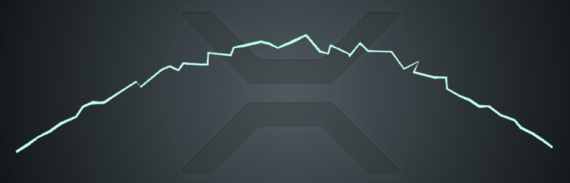
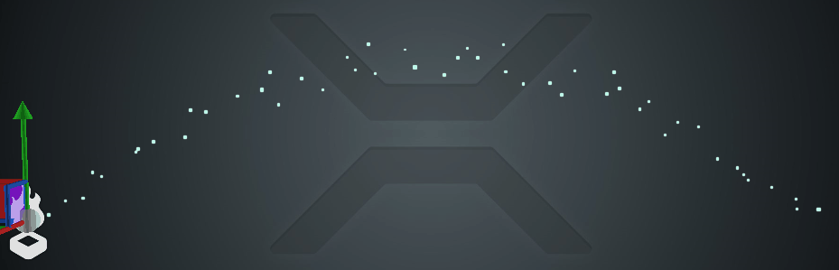
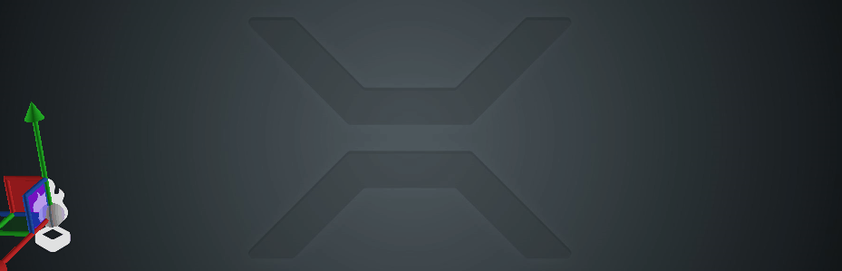

チュートリアル: レーザーと稲光
中級 アーティスト プログラマー
このチュートリアルでは、パーティクルやカスタムマテリアルを使ってレーザーや稲光を生成する方法を説明します。
このような稲光のアーチを作ることを想像してみてください。

このエフェクトは、次のような特性を持った 1 本のひもです。
固定された 2 点間を結ぶ
素早く位置が変わる
1 本のひもとして描画できる
稲光は一本の線状の帯なので、リボン シェイプビルダーを使ってレンダリングすることもできますが、いくつか大きな違いがあります。パーティクルです。
パーティクルは、順番ではなく、同時に生成されます。
パーティクルは一本の線または円弧のうえに現れますが、若干ランダムな位置を持つことで、稲光のような視覚を与えます。
パーティクルは、とても迅速に再出現します。
同時生成（Simultaneous spawning）
フレームごとにループするスポナーを作ります。このスポナーは、毎フレームごとに一定数（50 個とします）のパーティクルを産み出すものとします。
一度に表示されるのは 1 つのセットだけなので、エミッターの最大パーティクル数を 50 に制限し、同じライフスパンを与えます（例えば、0.2 秒）。
つまり、スポナーは毎フレーム 50 個のパーティクルを放出しようとしますが、パーティクルの数を制限しているため、最初のフレームでは 50 個のパーティクルが生成されます。
これらのパーティクルはすべて同じライフスパンを持っているので、50 個のパーティクルはすべて同時に消滅し、新たに 50 個のパーティクルが生成されることになります。
2 点を結ぶ
ここでは、Position (Arc) タイプのイニシャライザーを使用します。このイニシャライザーは、他のエンティティ（ターゲットエンティティ）の位置を円弧のもう一方の端として選び、自身のエミッターとターゲットエンティティとの間に引かれた円弧の上にパーティクルが出現させます。
Ordered チェックボックスをオンにすると、パーティクルをエミッターからターゲットエンティティに向かって等間隔で配置することができます。 これは、リボン シェイプビルダーを使ってレンダリングするときには重要です。なぜなら、パーティクルが円弧に沿ってランダムな（順序付けされていない）位置に表示されると、描画の順番や前後関係が混乱してしまうからです。 よって、Spawn Order タイプのイニシャライザーを追加して、パーティクルを順番に並べ替えなければなりません（これは稲光だけでなく、すべてのリボンに当てはまります）。
Position (Arc) イニシャライザーの初期設定ではランダムなオフセットを設定することも可能で、その際にはオフセットとしていくつかの小さな数値を設定します。
素早く位置を変える
パーティクルのライフスパンを、小さな数値（例：0.2 秒）に設定します。Time scale パラメータを使うと、さらにパーティクルシステム全体の速度をコントロールすることができます。
ここでは、何が起こっているのかをより分かりやすくするために、リボンの代わりにビルボード シェイプビルダーを使って、同じエフェクトを 30 倍にスローダウンしてみます。

稲光を移動する
稲光のアーチを静止させるのではなく、ポイント A からポイント B へと移動させる方法があります。

そのためには、いくつかの調整が必要です。
生成レートを下げます。上の例では 600 / 秒として 0.1 の時間スケールで再生していますが、これは 1 フレームあたり約 1 個のパーティクルを生成することを意味しています。
アークポジショナーに、固定カウント（50）を設定します。フレームごとに生成されたパーティクルの総数に基づいて距離を補間するため、あまりに大量に連続してパーティクルを生成すると、すべてのパーティクルが円弧の始まりに留まってしまいます。そこで、カウントを 50 に設定することで、アークポジショナーにパーティクルの総数が 50 であることを通知することができます。
稲光が歳出減する前に古い稲光が完全に消えるように、スポナーに遅延（delay）を設定します。そうしないと、リボンは古いパーティクルと新しいパーティクルをどのように分割してよいかわからなくなり、誤って接続してしまいます。
パーティクルを使ったレーザー
パーティクルでレーザーを作ることは、稲光を作ることとよく似ています。レーザーはまっすぐかつ逸れることがないので、パーティクルの数は少なくて済みます。 アークポジショナーの矢高（arc hight）を 0 にして、さらにランダムオフセットを (0, 0, 0) に設定することで、パーティクルを一直線に配置することができます。必要に応じてパーティクルの大きさを少しずつ変え、レーザービームが揺らいでいるように見せることもできます。
レーザーの注意点としては、通常は、ターゲットが動くとそれに合わせてレーザーも動くということです。アークポジショナーはアップデーターではなくイニシャライザーなので、すでに生成済みのパーティクルには影響を与えられず、後ろに残ってしまいます。これに対処するには 3 つの方法があります。
パーティクルを非常に高速に生成します。パーティクルのライフスパンが 1 〜 2 フレームであれば、レーザーの再出現が早すぎて、ユーザーが視覚的な違いに気づかなくなります。
ローカル空間にパーティクルを生成します。つまり、パーティクルはエミッターと一緒に動きます。ただし、エミッターを回転させたり、スケールしたりして、常にターゲットエンティティの方を向くようにしなければなりません。
カスタムアップデーターを作成します。アークポジショナーと似たような（あるいはもっと単純な）カスタムポストアップデーターを作成すれば、パーティクルの位置を毎フレーム更新させ、パーティクルが動いても 2 点間に正しく配置することができます。
これらの選択肢は、作りたいゲームのタイプによって、それぞれメリットとデメリットがあります。毎フレームごとにパーティクルを生成する方法は最も簡単でシンプルな方法であり、ほとんどのニーズに応えることができます。
カスタムマテリアルを使ったレーザー
カスタムマテリアルを使ってレーザーを作る方法は、ローカル空間でパーティクルを扱う方法と似ています。エミッターを手動で回転させたりスケールを変えたりして、常にターゲットエンティティと向かい合わせる必要があります。
ターゲットに向けた 1 つの軸を長さと呼び、残り 2 つの軸をレーザーの幅と呼ぶことにします。
回転したエンティティの下に配置された高さ 1 の円柱をレンダリングし、その円柱が伸びてターゲットポイントに到達することになります。
カスタムマテリアルは、スクロールするテクスチャーを円柱に貼り付けるために必要です。また、スクロールのない通常の発光マップを使用することもできます。その場合には、カスタムマテリアルは必要ありません。
パーティクルサンプルには、この方法でレーザーを作成する例がすでにあります。LaserOrientationScript では、ターゲットポイントに向かってエンティティを回転・スケーリングし、ComputeColorTextureScroll シェーダーではスクロールするテクスチャーをサンプリングしています。
サンプルプロジェクト
このページで紹介されているテクニックをプロジェクトに実装する場合は、新しい Sample: Particles プロジェクトを新規に作成して、Lasers シーンを開いてください。